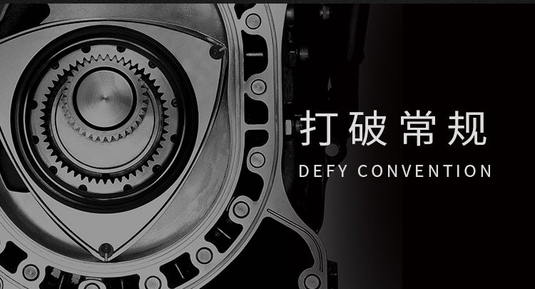
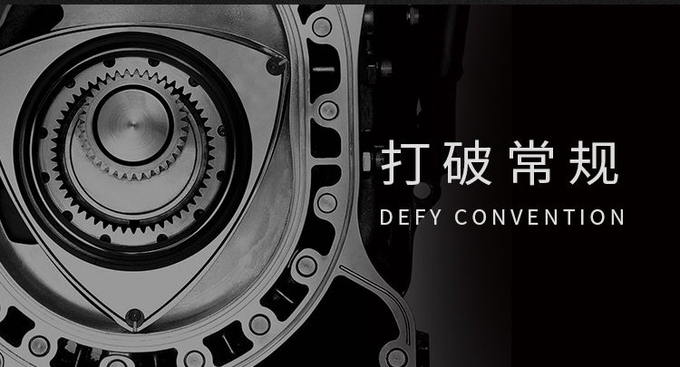

ZOOM-ZOOM 无限 我们如此热爱汽车。
坚持自由驰骋的驾乘愉悦。让人车关系， 如骑手与爱马,相依相伴,亲密默契,
这，便是马自达的造车之道。无论顺境逆境，都将秉承独创之｢道｣，挑战不止。

 

ZOOM-ZOOM 无限
我们如此热爱汽车。坚持自由驰骋的驾乘愉悦。让人车关系，如骑手与爱马，相依相伴，亲密默契，这，便是马自达的造车之道。无论顺境逆境，都将秉承独创之｢道｣，挑战不止。

名车博物馆
向经典致敬，那些曾经引领时代的名车
了 解 详 情


经典车型
向经典致敬，那些曾经引领时代的名车
了 解 详 情
- MX-5(1989~)
- RX-7(1978~)
- Cosmo(1975~)
- Savanna(1971~)
- Capella(1970~)
- Cosmo Sport(1967~)
- Luce(1966~)
- Mazda-Go 3-wheeled trucks(1931~)


Zoom-Zoom之路
ROAD OF ZOOM-ZOOM
-
始动
-
探索
-
迸发
-
荣耀
-
进化
早在1963年,马自达既完备了「全天候底盘测功机试验室」,迈出了追寻Zoom-Zoom之路的第一步。全天候底盘测功机试验室不仅兼备以往的台架试验,道路测试两项功能,且测试最高时速高达200km/h。因此,可以准确地再现各类行驶条件,精准地完成性能测试。
转子发动机的量产化创举! 转子发动机的量产化(1967年),1961年,东洋工业(马自达公司前身)与NSU公司及汪克尔公司建立转子发动机技术合作关系,历经无数次研发试验,终于在1967年,发布了全球首款转子发动机跑车 - Cosmo Sport。
最大限度追求驰骋的愉悦,为五感受带来极限的享受,皆为跑车的专属特权。马自达自1967年起,凭借独门绝技转子发动机的量产,推出了一些经典跑车系列,亦令马自达品牌的运动基因溢出言表。
在马自达与转子发动机的挑战史中，最受瞩目的莫属于法国勒芒24小时耐力赛的壮举。1991年、搭载着4转子发动机，动力为700马力的Mazda 787B，在18年中,13次冲击奖杯后，终于勇夺法国勒芒24小时耐力赛的综合冠军，也是亚洲车企首次也是唯一一次问鼎此殊荣。
2002年,马自达推出全新全球品牌理念「Zoom-Zoom」,并投放以第1代Mazda6为代表的第4代产品群广受好评。此后,2003年推出的RX-8,第1代Mazda3,2005年推出的第3代Roadster(MX-5),都各自充分着马自达独有的「Zoom-Zoom」品牌理念,为全球客户带来难以忘怀的「人马一体」式的驾驶。

转子传奇
LEGEND OF ROTARY
信念的力量，将不可能变为可能


- 车型奖项
- 设计奖项
- 技术奖项
- 其他奖项
- 特辑 | WCOTY 世界年度风云车型大奖
全球荣誉
了 解 详 情